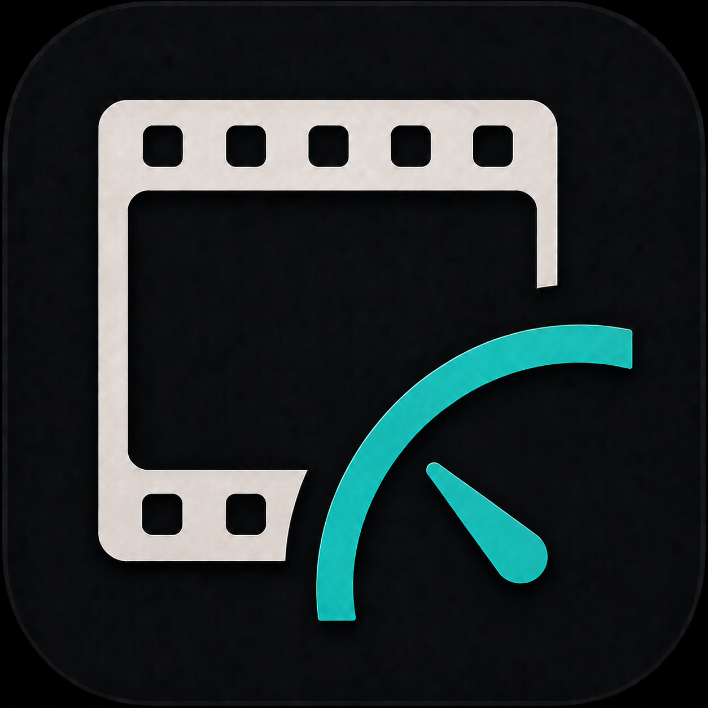
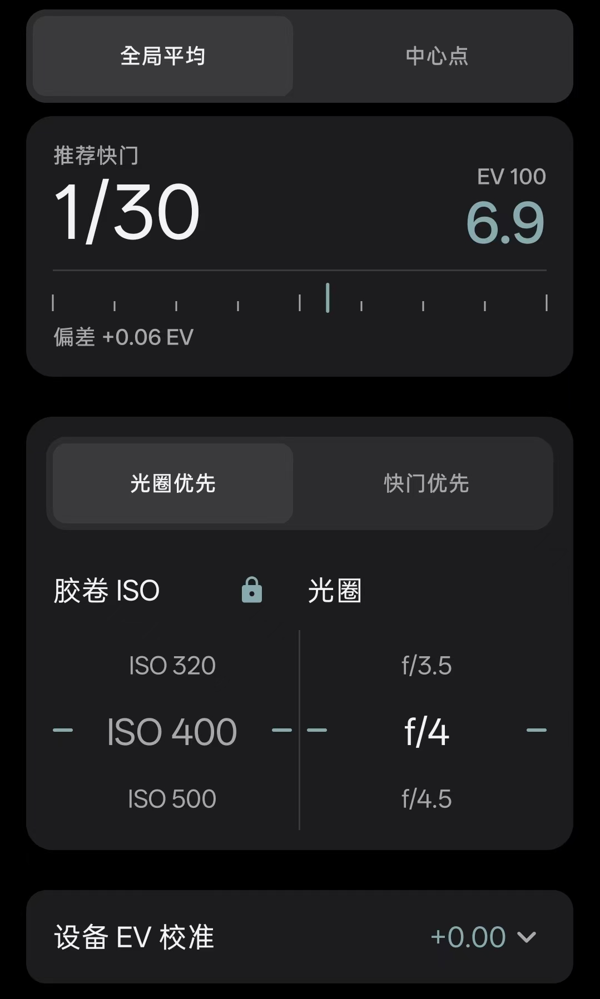

01CAMERA / REAL-TIME
测光
用手机摄像头读取场景，给出接近三分之一档的光圈与快门建议。

光匣GUANGXIA / FILM TOOLS光匣为胶片摄影师整理现场判断。少一点来回翻找，多一点专注于取景器里的世界。

REAL SCREEN / OPEN ↗从按下快门之前的判断，到拍完之后的记忆，光匣把四个高频动作收进一条顺手的路径。
用手机摄像头读取场景，给出接近三分之一档的光圈与快门建议。
输入 GN、ISO、距离与光圈，快速找到能落地的手动功率组合。
根据胶卷资料计算长曝光补偿，并把色彩滤镜提示放在结果旁边。
为每台相机记下在机胶卷。卸卷之后，历史也会被好好留下。
光匣不替你决定要拍什么。它只在需要的时候，把可核对的参数递到手边。
Android 6.0 及以上可用。当前版本 1.3.0，完全离线。
下载光匣